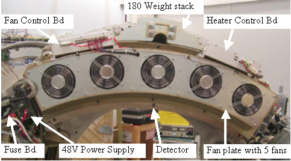

Illustration 3: 2006 style plenum with cable covers

| NOTE: | The following pictures show the older (2005 style) plenum. The new (2006 style) plenum and controllers have all sub-D connections that are all on the front. |
Illustration 2: Fan Controller (CFC) and Heater Controller (DHC) 2005 style

Illustration 3: 2006 style plenum with cable covers